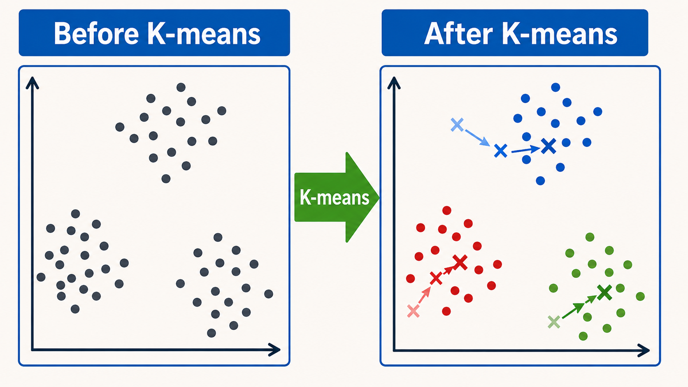
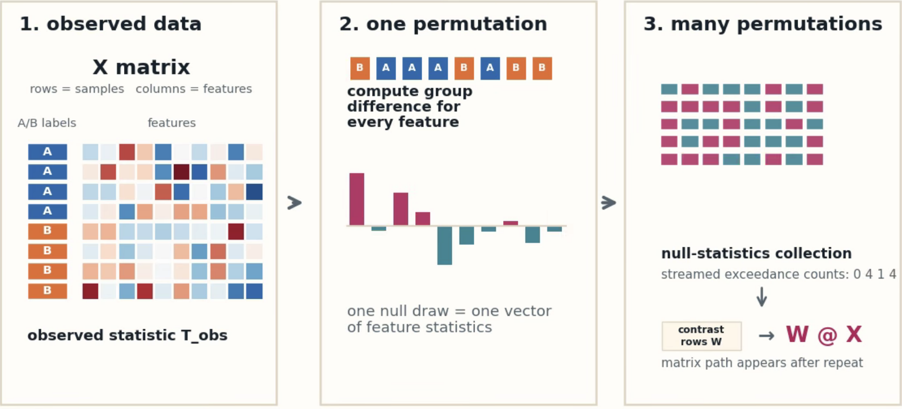
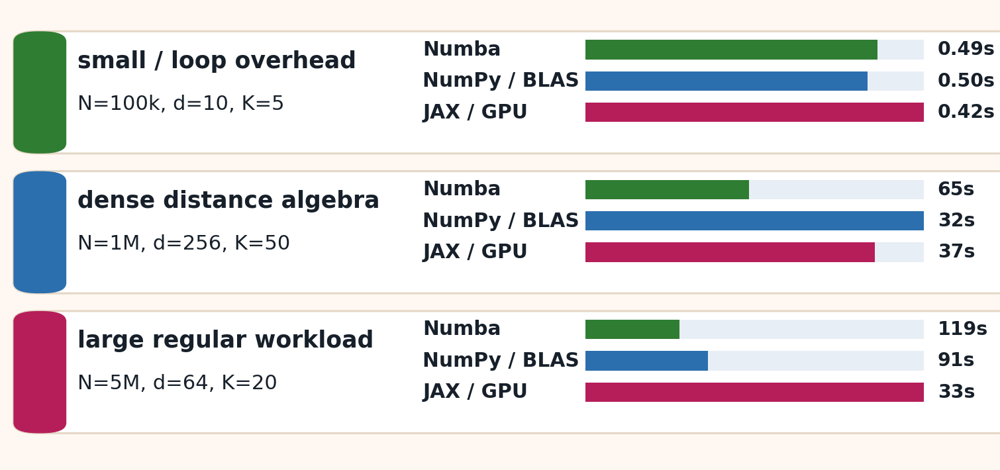
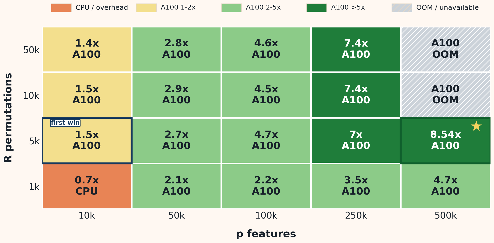

what to estimate, recover, preserve
Breaking the Speed Limit
Fast statistical models with Python 3.14, Numba, and JAX
From a statistician's workflow: validate first, then accelerate the bottleneck.
Python stays the control plane; only the validated computational hotspot is accelerated.
Department of Biostatistics, City University of Hong Kong · PyCon US 2026
Make the statistical task testable; then accelerate the measured bottleneck. Define the target, check agreement, then accelerate only the measured computational hotspot.
1Simulate
➜
2Validate
➜
3Find bottleneck
➜
4Pick the smallest tool
1
Simulation Provides the Test Harness
Real biomedical data rarely provide known truth. Simulation creates a controlled setting for checking recovery, calibration, and agreement.
null, alternative, hard cases
readable Python/NumPy implementation
recovery, calibration, agreement
loops, algebra, repetition, memory
smallest sufficient tool
Gate: optimization starts only after validation passes.
2
Decisions Before Timing
| Question | Decision before measuring speed |
|---|---|
| Scientific target | estimator, statistic, null, stopping rule |
| Ground truth | labels, known effect, nominal type-I rate |
| Acceptance | exact match, tolerance, recovery, calibration |
| Failure meaning | implementation, method, or systems limit |
| Scale stress | dimensions that make work expensive |
3
Validation Gates Passed
All speed claims below passed these checks.
✓k-means: max relative inertia difference 3.1e-14 < tolerance 1e-8.
✓permutation: same test statistic, same p-value definition, same resampling stream; max |p diff| = 0.0.
✓statistic difference: max |stat diff| = 9.4e-16 across the recorded validation grid.
✓null calibration: estimated type-I error 0.051 near nominal alpha 0.05.
AI
AI Scales the Workflow; the Statistician Owns the Claim
What AI can automate
- implementation variants
- scenario-grid runners
- metadata capture
- plot regeneration
- result manifests
AI assistant automating experiment tasks
What the statistician decides
- statistical target
- data-generating assumptions
- validation criteria
- interpretation of difficult cases
- scientific claims
Statistician making scientific decisions
4
Two Workloads, Two Bottleneck Patterns
k-means = iterative fitting

distance loopstemporariescompiled kernels
permutation = resampling inference

shared arraysbatchingW @ X
Validation contract: k-means keeps the same data, initialization, and stopping rule; permutation keeps the same resampling stream and p-value definition.
5
After Validation, Performance Depends on Workload Structure
K-means: workload structure determines the implementation
- loop-dominated computations: Numba, NumPy, and A100 are similar
- dense distance computations: NumPy / BLAS is best
- large regular batches: JAX / A100 is best

Permutation: A100 is useful only after batching and streaming
- A100 becomes advantageous after batching and streamed reduction
- largest validated speedup in this grid: 8.54×
- out-of-memory configurations are reported explicitly

6
Bottleneck Signal → Smallest Move
Reusable diagnostic guide
validation failsrevisit the statistical definition or implementation
loop-dominated Python codeNumba
dense array algebraNumPy / BLAS
repeated independent workthreads / workers
large regular batchesJAX / A100
memory-limited workloadstreaming / reduction
7
Tool Choices in This Talk
Examples, not a ranking.
8
Report Every Speed Claim
✓validation target and acceptance criteria
✓compute tier: local validation, server CPU, or A100
✓cold/warm timing and compilation treatment
✓transfer, allocation, and collection treatment
✓unavailable or out-of-memory configurations reported explicitly
✓smallest tool that preserves the statistical result
Timing semantics: compilation excluded; data transfer included; kernel-only timings not reported.